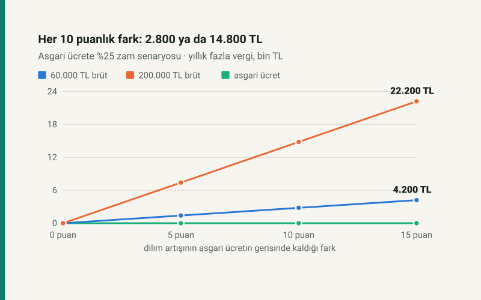

Kısa cevap
Gelir vergisi dilimleri kanun gereği yeniden değerleme oranıyla artar; asgari ücret ise ayrı bir kararla. İkisi aynı oranda artarsa ücret, asgari ücret ve dilimler birlikte büyür ve net tam o oranda artar.
Dilimler geride kalırsa kayıp eşik eşik hesaplanır: eşik × fark × iki dilim oranının farkı. 2026 tarifesinde ikinci eşik 400.000 TL (%20 → %27), üçüncü 1.500.000 TL (%27 → %35). Birinci eşiğin kaymasını asgari ücret istisnası nötrler; asgari ücretlinin vergisi zaten sıfırdır.
Senaryo: asgari ücrete %25 zam
| 2026 aylık brüt | Dilimler %25 | %20 | %15 | %10 |
|---|---|---|---|---|
| 33.030 TL (asgari) | 0,00 TL | 0,00 TL | 0,00 TL | 0,00 TL |
| 60.000 TL | 0,00 TL | 1.400,00 TL | 2.800,00 TL | 4.200,00 TL |
| 100.000 TL | 0,00 TL | 1.400,00 TL | 2.800,00 TL | 4.200,00 TL |
| 200.000 TL | 0,00 TL | 7.400,00 TL | 14.800,00 TL | 22.200,00 TL |
60.000 ve 100.000 TL'lik maaşlar aynı kaybı yaşıyor, çünkü ikisi de yalnızca ikinci eşiği geçiyor: 400.000 × 0,10 × (%27 − %20) = 2.800 TL. 200.000 TL üçüncü eşiği de geçiyor: 1.500.000 × 0,10 × (%35 − %27) = 12.000 TL daha, toplam 14.800 TL.
Kim etkilenir?
Kayıp, yıllık matrahı ikinci eşiğin asgari ücretle büyümüş hâlini aşanlarda başlar. %25 zam senaryosunda bu, 2027'de aylık brüt yaklaşık 49.020 TL. Bunun altındaki ücretlide dilimlerin geride kalmasının etkisi ya sıfırdır ya da tam kaybın bir kısmıdır.
Ne zaman belli olur?
Yeniden değerleme oranı ekim ayı itibarıyla Yİ-ÜFE'nin on iki aylık ortalamasındaki artıştır; kasım başında belli olur. Asgari ücret aralıkta açıklanır. Yeniden değerlemenin tarifeye nasıl uygulandığı ve kesir atma kuralı için: yeniden değerleme oranı nedir? 2022–2026'da dilimlerin gerçekte ne kadar geride kaldığı: dilim kayması gerçekten oluyor mu?
Varsayımlar
- Asgari ücret %25 artar; bu bir tahmin değil, senaryodur. Maaş da aynı oranda artar.
- Dilim oranları, prim oranları ve istisna tekniği 2026'daki gibi kalır; eşikler kesir atılmadan büyür.
Kendi maaşınız ve kendi senaryonuzla: asgari ücret zammı senaryosu.
Kaynaklar
- 193 sayılı Gelir Vergisi Kanunu m.103 (tarife), m.23/1-(18) (asgari ücret istisnası), mükerrer m.123 (yeniden değerleme).
- 213 sayılı Vergi Usul Kanunu mükerrer m.298/B (yeniden değerleme oranı).
Tablo sitenin açık kaynaklı senaryo modülünden (bordro/asgari-senaryo.js) üretilir; otomatik test kayıp kuralını ve homojenliği ayrıca sınar.
Sık sorulan sorular
2027 vergi dilimleri ne kadar artacak?
Kanun gereği yeniden değerleme oranı kadar; oran kasım başında belli olur. Yazı bir senaryodur.
Dilimler asgari ücretten az artarsa ne kaybederim?
Her 10 puanlık fark için yıllık matrahı ikinci eşiği aşan ücretli yılda 2.800 TL, üçüncü eşiği de aşan 14.800 TL fazla vergi öder.
Asgari ücretli dilim artışından etkilenir mi?
Hayır. Asgari ücret gelir ve damga vergisinden istisnadır; dilimler ne kadar artarsa artsın asgari ücretlinin vergisi sıfırdır.